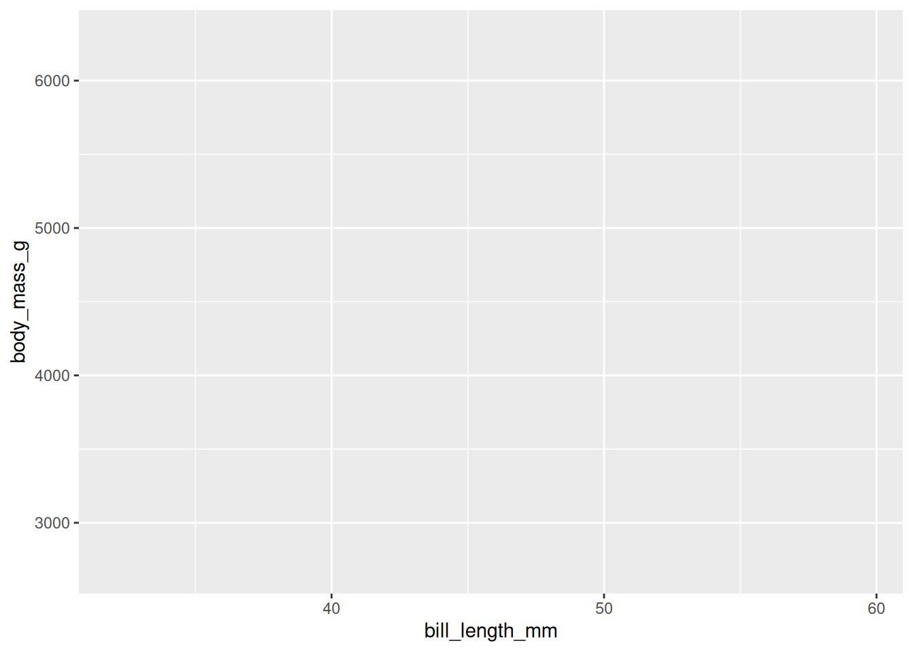
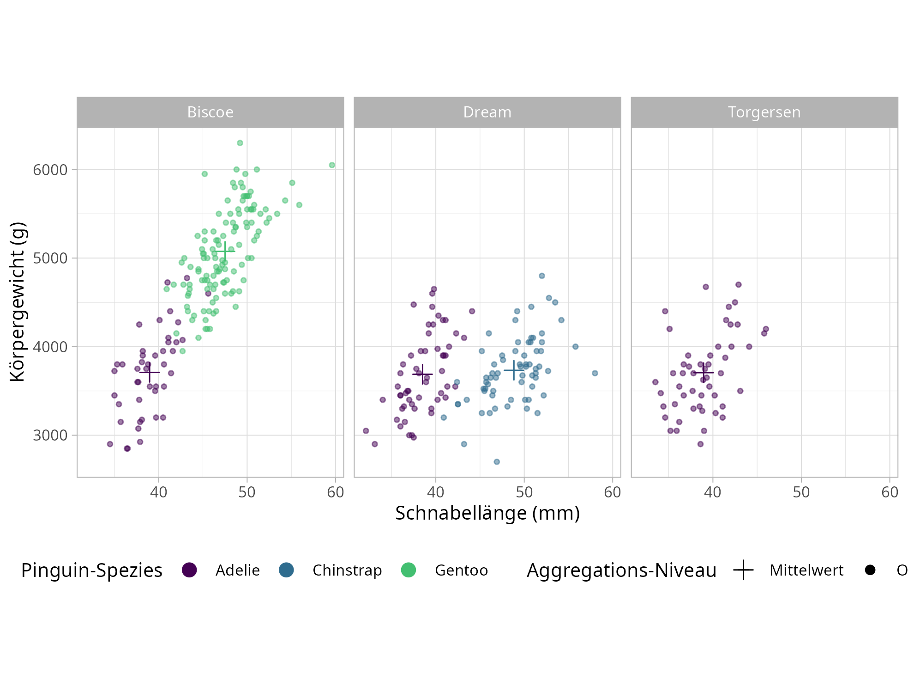

Hadley Wickhams Paket ggplot2 versucht, die Erstellung von Grafiken in einer einheitlichen Grammatik, der “grammar of graphics”, auszudrücken. Das Ziel hier ist es, nicht mehr in “Scatterplot” und “Boxplot” als einzelne Kategorien zu denken und diese einzeln erstellen lernen zu müssen, sondern alle Abbildungen mit derselben Logik erstellen zu können.
In Seinem Paper (Wickham, 2010) werden die folgenden Komponenten als grundlegende Bausteine einer Grafik eingeführt:
a default dataset and set of mappings from variables to aesthetics,
one or more layers, with each layer having one geometric object, one statistical trans- formation, one position adjustment, and optionally, one dataset and set of aesthetic mappings,
Wir wollen den Zusammenhang zwischen Körpergewicht und Schnabellänge über die Spezien betrachten. Dafür legen wir die “Leinwand” des Plots mit den zentralen mappings an:
palmerpenguins::penguins %>%ggplot(aes(x = bill_length_mm, y = body_mass_g,color = species))

Diesem Plot fügen wir Punkte als geometrische Objekte hinzu, die uns zu einem Scatterplot führen:
palmerpenguins::penguins %>%ggplot(aes(x = bill_length_mm, y = body_mass_g,color = species)) +geom_point()
Wir als weiteres geometrisches Objekt könnten wir uns zum Beispiel wünschen, die Mittelwerte pro Gruppe mit den Abweichungen auf x- und y-Achse darzustellen. Dazu müssen wir zuerst diesen neuen Datensatz berechnen:
Die Symbole und Farben haben genau wie x- und y- Koordinaten als ästhetische Mappings eigene Skalen. Wenn uns also die Farben nicht passen, können wir einfach eine andere Skala setzen:
Das Koordinatensystem passt von der Auflösung erstmal, aber wir wollen eine direkte Zuordnung von 10 mm Schnabellänge zu 1000 g Körpermasse. Dazu fügen wir eine coord_*-Spezifikation an:
Als letzte Komponente überlegen wir uns, dass die verschiedenen Beobachtungspunkte als Einteilung interessant sein könnten und wir diese getrennt betrachten wollen. Um diese Facettierung umzusetzen ergänzen wir zuerst den Mittelwerts-Datensatz um den Beobachtungsort:
In diesem Zusammenhang können wir auch gleich Base-Font und Schriftgröße setzen. theme_light setzt die kleinste Schriftgröße auf .8 * die base_size, wenn wir minimal 8pt große Schrift haben wollen.
Die beiden theme-Funktionen müssten wir so an jede Grafik anfügen. Solche Wiederholungen sind schlechter Stil und stören beim Lesen des Skripts, deswegen bietet ggplot2 convenience-Funktionen um allgemeine Einstellungen zu setzen. Mit dem folgenden Snippet am Anfang des Skripts werden die Standards für alle Grafiken genutzt:
Zum Abschluss können wir die Grafiken exportieren.
Die Textgröße ist in pt gesetzt, deswegen sollten wir nach dem Export die Größe im besten Fall nicht mehr viel ändern.
Eine Din A4-Seite ist 8.2 x 11.6 Zoll groß. Wenn wir eine Grafik auf 80% der Seitenbreite haben wollen, brauchen wir also eine 6.56 Zoll breite Grafik.
Zum Speichern setzen wir unsere Grafik und die Maße in ggsave ein:
 Erstens können wir schonmal feststellen dass die Grafik ruhig schmaler werden kann. Die Export-Funktion hat uns eine Höhe von 6.74 Inches mitgeteilt, das können wir ruhig auf 4 inches reduzieren.
Zweitens ist die Legende ein bisschen kaputt gegangen.
Stelle die Reaktionszeiten und Accuracies in einem Scatterplot dar.
Färbe den Graphen nach Gruppen ein
Füge Mittelwerte und Standardabweichungen pro Gruppe hinzu. Füge die Standardabweichungen dabei mit geom_linerange in zwei layern hinzu (einem für die x- und einem für die y-Richtung)
Passe die Grafik so an, dass sie APA-konform ist
Mache die Grafik so unästhetisch, wie es die APA-Richtlinien zulassen. Hier sind Fonts, Farben und Formen zu finden.